EMERGENZA RAPIDO
Se la Tesla carica senza FV o c'e puzza di bruciato:
1. Vai al QE4 → premi il TASTO ROSSO
2. Oppure: abbassa JXB1-63 "WALLBOX CANCELLO"
3. Il LED wallbox si spegne → zero rischio
Quadro QE4
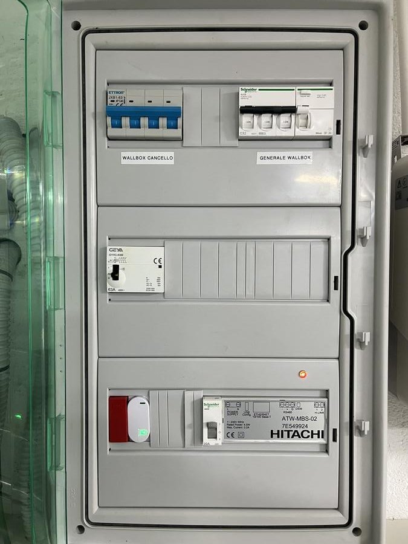
Posizione: Locale tecnico, parete sinistra, coperchio trasparente.
Componenti: JXB1-63 40A (generale wallbox) | Schneider C16 3P+N | GEYA contattore 63A PDC | ATW-MBS-02 Modbus (IP 192.168.1.5:502) | Tasto rosso emergenza | Shelly stato.
Alimentazione: 380V trifase.
Wallbox Garage — Tesla
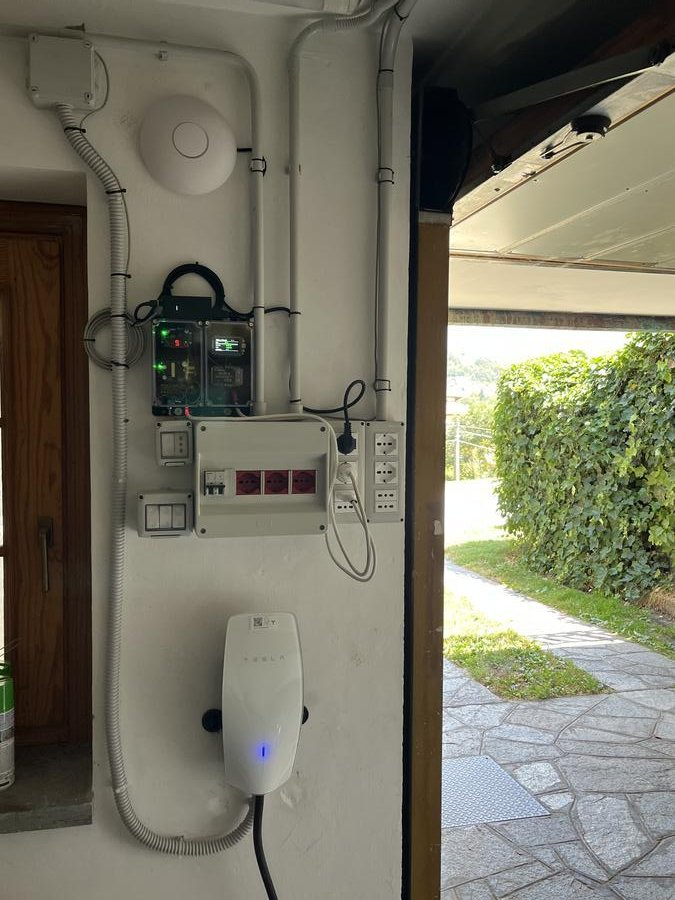
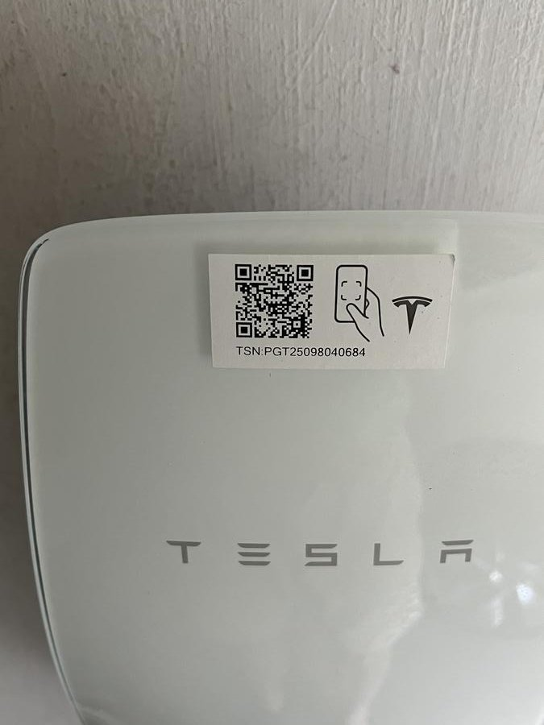
Modello: Tesla Wall Connector Gen 3 — TSN: PGT25098040684
Posizione: Parete destra garage.
Potenza: 16A trifase ~11 kW.
LED: Blu fisso = pronta | Verde lampeggiante = in carica | Rosso fisso = errore | Spento = no alimentazione.
Wallbox Cancello — TERA
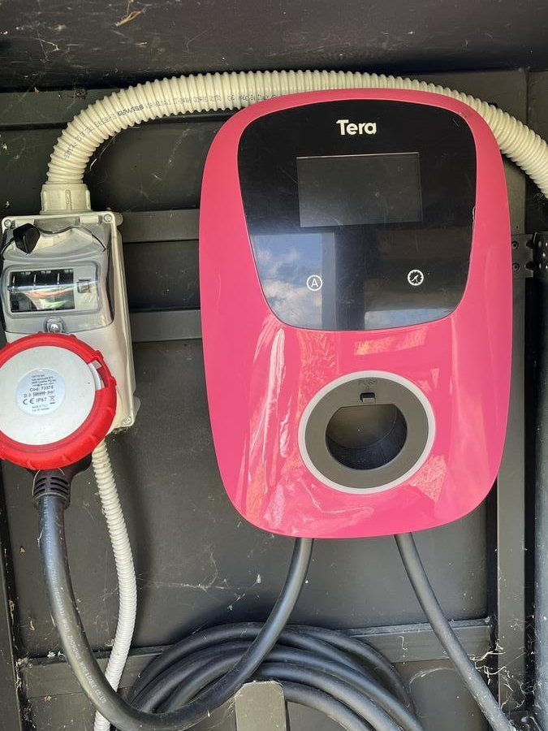
Modello: TERA (italiana, colore rosa/rosso).
Posizione: Cancello carraio, sostegno metallico destra.
Connettore: Presa tipo 2 + CEE industriale rossa 3 fasi.
Cavo dal QE4: ~45 metri 5G4mm².
Max: 16A trifase ~11 kW.
ESP32 Garage — FREENOVE ESP32-S3
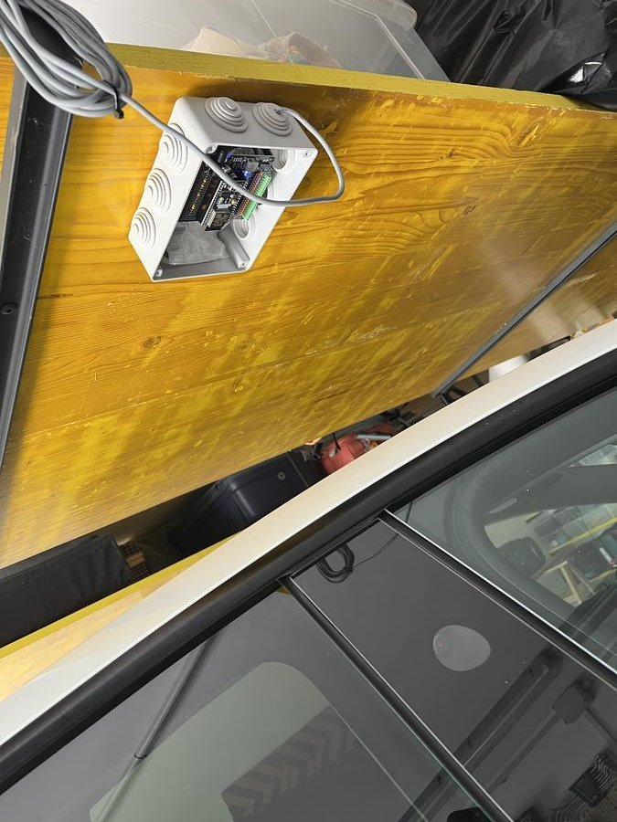
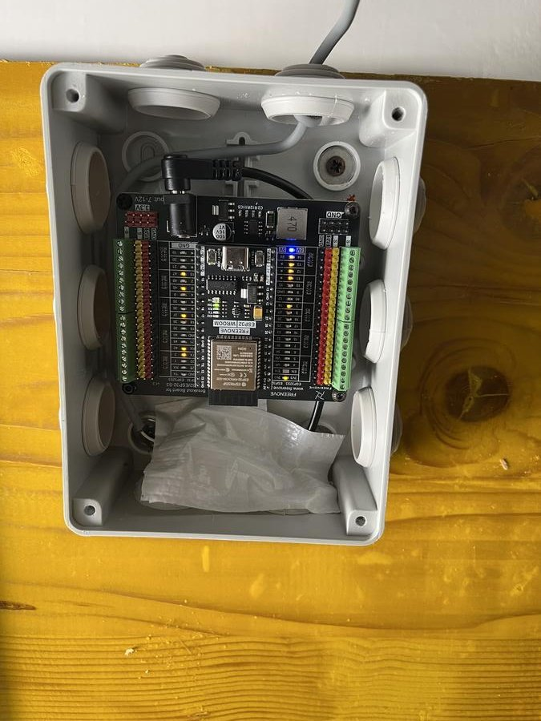
Scheda: FREENOVE ESP32-S3-WROOM v1.2 (WiFi+BLE dual-core).
IP: 192.168.1.175 | MAC: 88:57:21:77:02:24
Posizione: Scatola IP grigia su trave legno soffitto garage.
Alimentazione: 9.1V DC dalla scatola a sinistra del QE4 → stabilizzato a 5V.
LED: Blu acceso = funzionante | Spento = verificare alimentazione.
Funzione: Bridge WiFi↔BLE. Riceve comandi da Home Assistant e comanda la Tesla via BLE.
Display e alimentazione
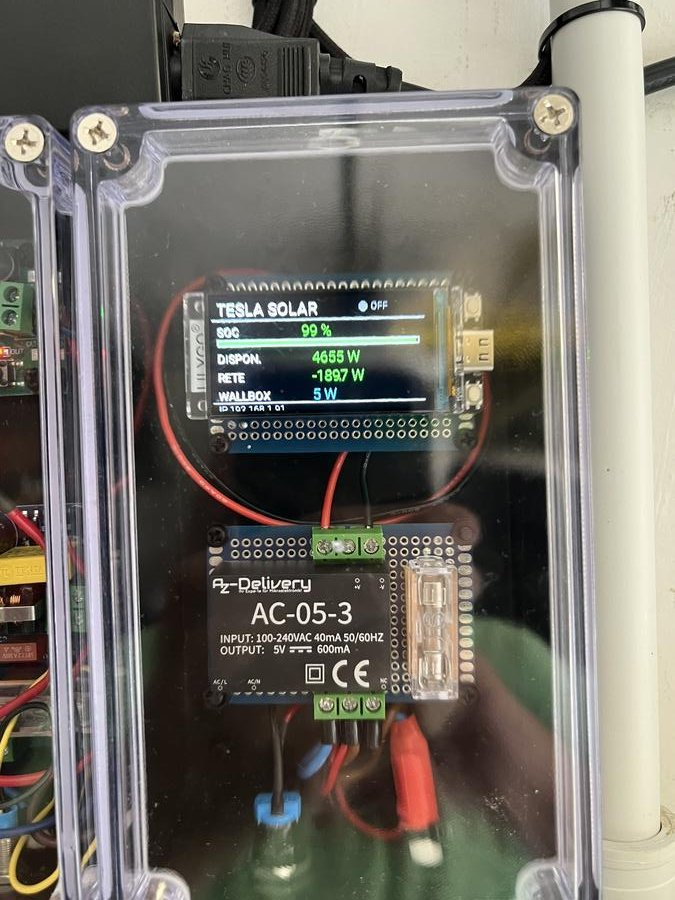
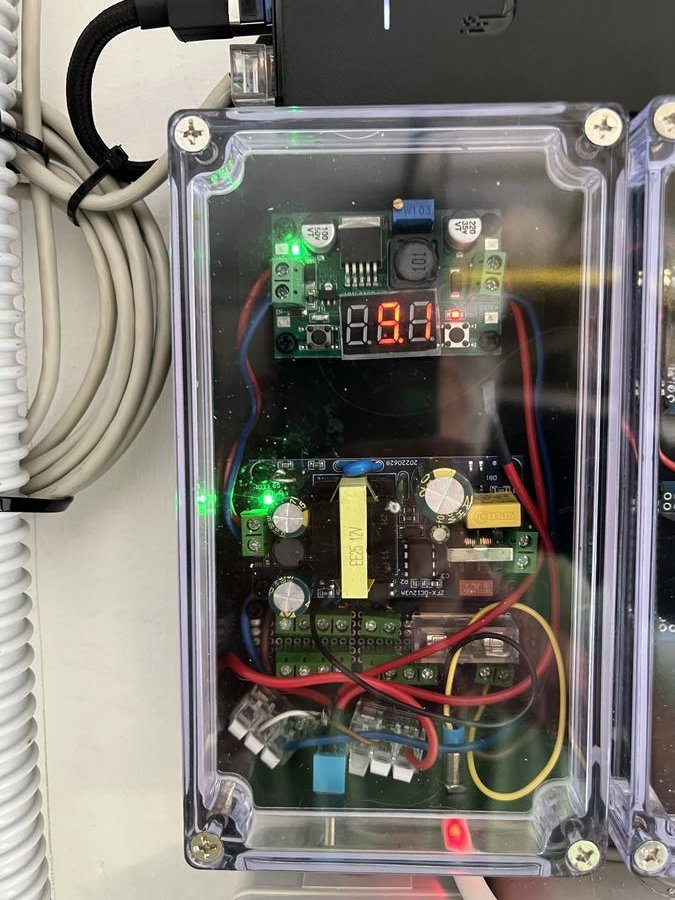
Shelly 3EM — Misura consumo
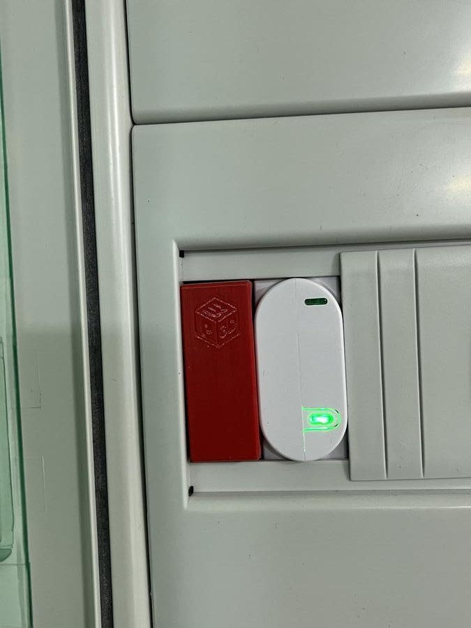
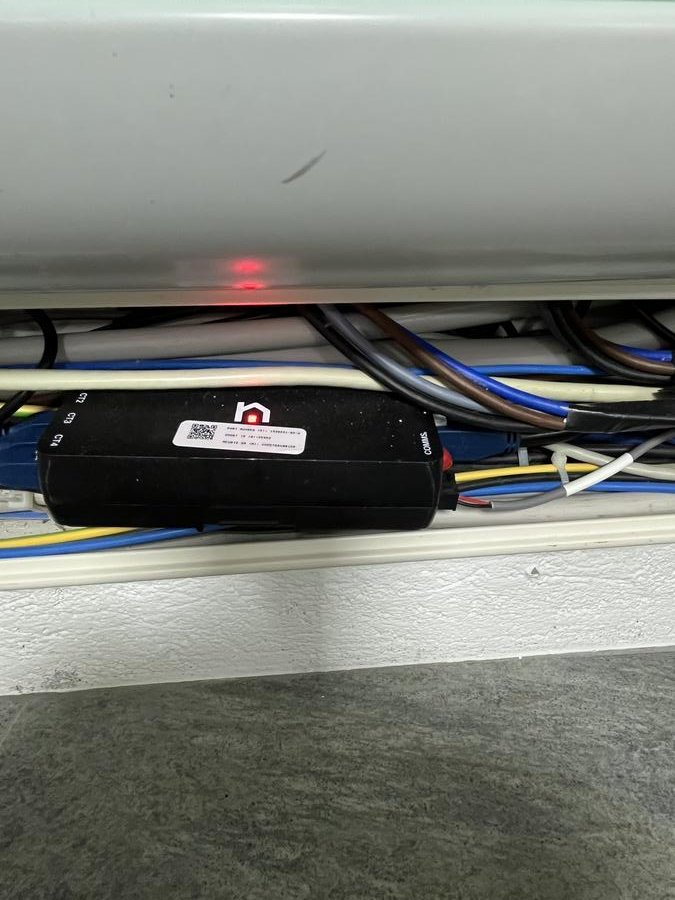
Posizione: Canalina sotto il quadro QE4.
Funzione: Misura trifase a monte di entrambe le wallbox. Dati letti dal PID Tesla ogni 10 secondi.
LED: Rosso acceso = alimentato e funzionante.
Panoramica ESP32 + Tesla
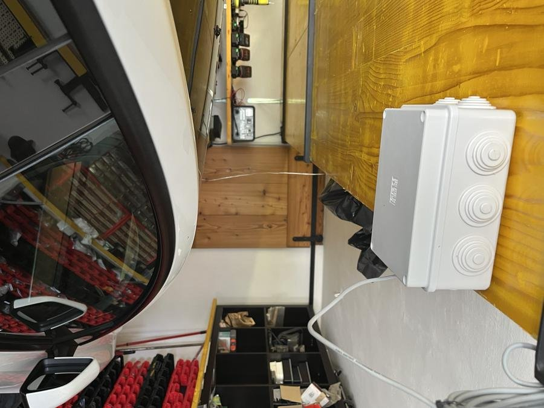
Funzionamento solare
- FV produce energia → HA calcola surplus (PV - consumi).
- PID AppDaemon decide gli ampere per la Tesla (2-16A).
- HA invia via WiFi → ESP32 (garage o cancello, quello vicino all'auto).
- ESP32 traduce WiFi → BLE → comanda Tesla.
- Tesla regola corrente in tempo reale sul surplus FV.
Emergenza — Sequenze
HA impazzito / carica senza FV
- Vai al QE4 → premi il TASTO ROSSO.
- Oppure: abbassa JXB1-63 "WALLBOX CANCELLO".
- Usa l'app Tesla per caricare manualmente.
ESP32 morto
- Spegni alimentatore 9.1V dal QE4.
- Usa app Tesla per caricare.
- Chiama Marco: 335-1354309. ESP32 di scorta: cassettiera garage.
Blackout ENEL
Tutto si spegne. La wallbox NON e' su backup batterie. Dopo ripristino ENEL: tutto riparte automaticamente.
Ripristino
- Rialza interruttore QE4.
- Attendi 30 secondi.
- Verifica LED blu wallbox e ESP32.
Valori normali
| Misura | Normale | Anomalia |
|---|
| Tensione wallbox | 380V trifase | <360V o >420V |
| Corrente PID (giorno FV) | 2-14A dinamico | 0A o 16A fisso |
| Potenza max | ~11 kW | >12 kW |
| Shelly 3EM | Positivo in carica | Negativo |
| Alimentatore display | ~9.1V DC | 0V o >12V |
| LED ESP32 | Blu acceso | Spento |
Contatti
| Problema | Chi | Telefono |
|---|
| Elettrico / scintilla / contattore | Claudio Massello | 348-6977962 |
| ESP32 / HA / BLE / automazione | Marco | 335-1354309 |
| Tesla non carica (problema auto) | Tesla Service | 800-97-18-25 |
| Blackout ENEL non torna | ENEL | 803500 |